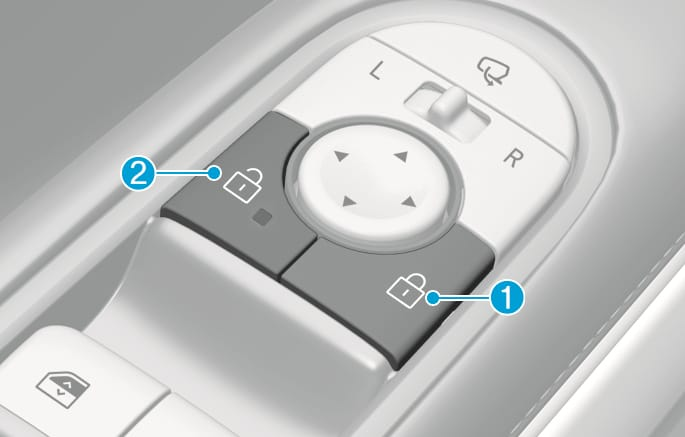
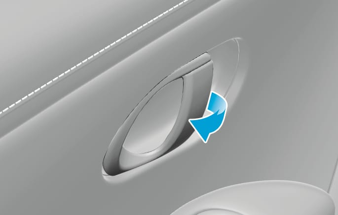

차량 내부에서 잠금/잠금 해제
-
주행 전 도어가 완전히 닫혔는지 확인하고, 운전석 도어의 도어 잠금 버튼을 눌러 모든 도어를 잠그십시오.
-
특히 어린이가 탑승한 경우, 주행 중 모든 도어를 잠금 상태로 유지하십시오. 차량이 이동하는 중 실수로 차량의 도어가 열리면 심각한 사고가 발생할 수 있습니다.
차량 및 부품의 파손을 방지하려면 도어와 도어 핸들을 조작할 때 무리한 힘을 가하지 마십시오.

2C_CentralDoorLockButton
도어 잠금(1)
운전석 도어의 도어 잠금(
도어 잠금 해제(2)
운전석 도어의 잠금 해제(

2C_InsideDoorHandleOverview
운전석 도어 핸들을 당기면 잠금이 해제되며 도어가 열립니다.
도어 핸들을 당기면 도어 잠금이 해제되고, 다시 당기면 도어가 열립니다.
-
정차 후 도어를 열기 전에 후방에서 접근하는 차량이나 이륜차, 자전거, 보행자 등이 있는지 확인하십시오.
-
스마트 키가 차안에 있는 상태에서 시동 버튼을 눌러 시동을 걸거나 도어 잠금 버튼을 누르면 모든 도어가 잠길 수 있습니다. 그러므로 차량 시스템을 모르는 사람이나 어린이들을 혼자 차 안에 남겨 두지 마십시오. 잘못 조작하여 예기치 못한 사고가 발생할 수 있습니다.
-
혼자 차량 문을 열고 하차할 수 없는 어린이나 동물을 차 안에 남겨 두지 마십시오.
-
밀폐된 차량 내부 온도는 외부 기온에 따라 급격하게 변합니다.
-
장시간 차량 내부에 갇히는 경우 질식으로 인해 심각한 상해를 입거나 사망할 수 있습니다.
-
-
도어를 모두 잠근 후에도 실내에서 운전석 도어 핸들을 당기면 도어가 열립니다. 주행 중 차량의 도어가 열리면 매우 위험하므로 도어를 열지 않도록 주의하십시오.
-
주행 중에는 항상 도어를 잠그십시오. 정차 중 또는 서행 중 타인이 도어를 열고 침입하는 경우를 방지할 수 있습니다.
-
도어가 열려 있는 동안에는 운전석 도어의 중앙 도어 잠금 버튼을 눌러도 도어가 잠기지 않습니다.
-
차량 안에 어린이나 동물이 탑승한 상태로 도어가 잠긴 경우, 비상 키로 운전석 도어의 잠금을 해제할 수 있습니다. 자세한 설명은 다음의 '비상 키 사용하기'를 참고하십시오.